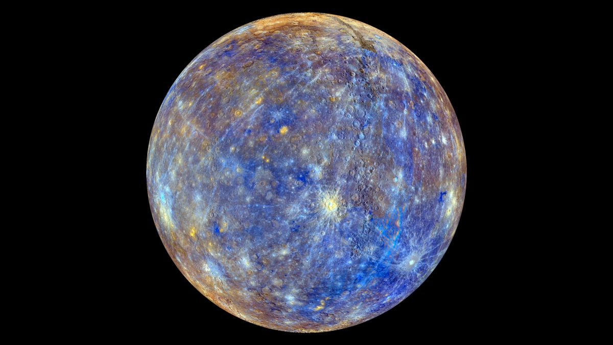

Mercury
Mercury is the smallest planet in the Solar System and the closest to the Sun. Its
orbit around the Sun takes 87.97 Earth days, the shortest of all the Sun's planets. It is named after the
Roman god Mercurius (Mercury), god of commerce, messenger of the gods, and mediator between gods and
mortals, corresponding to the Greek god Hermes (Ἑρμῆς). Like Venus, Mercury orbits the Sun within Earth's
orbit as an inferior planet, and its apparent distance from the Sun as viewed from Earth never exceeds 28°.
This proximity to the Sun means the planet can only be seen near the western horizon after sunset or the
eastern horizon before sunrise, usually in twilight. At this time, it may appear as a bright star-like
object, but is more difficult to observe than Venus. From Earth, the planet telescopically displays the
complete range of phases, similar to Venus and the Moon, which recurs over its synodic period of
approximately 116 days.
Mercury rotates in a way that is unique in the Solar System. It is tidally locked with the Sun in a 3:2
spin–orbit resonance, meaning that relative to the fixed stars, it rotates on its axis exactly three
times for every two revolutions it makes around the Sun. As seen from the Sun, in a frame of
reference that rotates with the orbital motion, it appears to rotate only once every two Mercurian years. An
observer on Mercury would therefore see only one day every two Mercurian years.
Mercury's axis has the smallest tilt of any of the Solar System's planets. Its orbital
eccentricity is the largest of all known planets in the Solar System; at perihelion, Mercury's distance
from the Sun is only about two-thirds (or 66%) of its distance at aphelion. Mercury's surface appears
heavily cratered and is similar in appearance to the Moon's, indicating that it has been geologically
inactive for billions of years. Having almost no atmosphere to retain heat, it has surface temperatures that
vary diurnally more than on any other planet in the Solar System, ranging from 100 K (−173 °C; −280 °F) at
night to 700 K (427 °C; 800 °F) during the day across the equatorial regions. The polar regions are
constantly below 180 K (−93 °C; −136 °F). The planet has no known natural satellites.